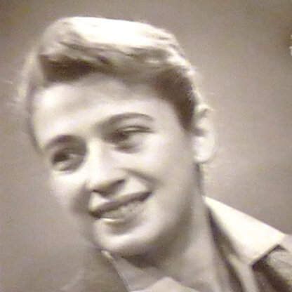

Portrait d’archive
Germaine Guerda Bach [alias Diane] (S)
Germaine Gerda BACH (S)
Nom : BACH
Prénom(s) : Germaine Guerda
Date naissance : 21/11/1925
Âge (ans) : 19
Lieu naissance : Paris
Pays ou département : Seine
Lieu rassemblement : Lyon
Dernière adresse : 77, Rue Henri Rolland
Ville : Villeurbanne
Code postal : 69100
N° Convoi : 76
Date déportation : 30/06/1944
Informations diverses : Etudiante. En 1942, elle poursuivit ces actions de propagande dans le cadre de l’UJJ (Union de la Jeunesse juive) ; à Paris, puis à Lyon à partir du printemps 1943. Arrêtée le 07/06/1944 à Villeurbanne avec son père Tanchel Bach (né le 17 mai 1892 à Domaczevo en Pologne), tricoteur. Internée à Montluc (cellule 12). « J’ai été arrêté par Francis André, dit " Gueule tordue", adjoint de Barbie. Il m’a rattrapée alors que j’avais tenté une évasion en m’échappant du véhicule. Je n’ai pas été blessée, malgré la fusillade qui m’a accompagnée durant ma fuite. On a arrêté mon père en même temps que moi. Et nous avons été emmenés au siège de la Gestapo, place Bellecour, à Lyon. Après avoir subi un interrogatoire musclé en règle, au terme duquel je ne tenais plus sur mes jambes, on m’a littéralement jetée dans une pièce sombre où se tenaient mon père, le crâne blessé par un coup de crosse, et d’autres prisonniers. Inutile de dire combien mon père était désespéré lorsque la sentinelle qui nous gardait lui a dit : « Si elle est de votre famille, vous pouvez lui dire au revoir, elle sera fusillée ce soir. Nous n’avons pu que nous soutenir quelques instants, puis nous avons été séparés, définitivement, l’un et l’autre emmenés à Montluc. »
Elle fut transférée 8 jours plus tard au camp de Drancy. C’est en fait son père qui est fusillé le 12 juin avec 22 otages de la prison, dans une clairière près du village de Dagneux (Ain). Germaine est déportée le 30 juin 1944 au centre de mise à mort d’Auschwitz-Birkenau. Elle est internée au camp de femmes de Birkenau. Elle porte le numéro matricule A-8528. Elle y croise Paulette Shlivka qu’elle a connue dans le club sportif de la MOI. Evacuées le 18 juin 1945, elles font ensemble, avec cinq autres Françaises, la marche de la mort. Puis elles furent emmenées sur des plateformes découvertes au camp de Ravensbrück.” (Source: Maitron). Transférée le 21/06/1944 à Drancy. Déportée à Auschwitz. Transférée à Buchenwald, Ravensbruck puis Neustadt-Glewe. Libérée le 02/05/1945. Germaine Bach se maria en 1949 avec le professeur Lucien Israël. Elle a eu trois enfants. Elle est décédée le 13 janvier 2012.Lieu de déportation : Auschwitz
Lieu de départ : Drancy
Nombre total de déporté·e·s du convoi : 1100
Gazé·e·s à l'arrivée : 479 (43,5 %)
Survivant·e·s en 1945 : 182 (16,5 %)